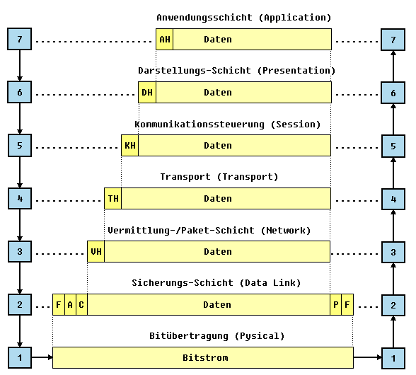
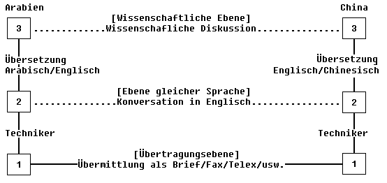

|
Grundlagen Computernetze
Prof. Jürgen Plate |
Grundlagen Computernetze
Der Zusammenschluß von diversen Computern und Peripheriegeräten
zu Netzen gewinnt immer stärkere Bedeutung. Netze (Netzwerke) sind
Verbindungssysteme, an die mehrere Teilnehmer zum Zweck der Datenkommunikation
angeschlossen sind.
Lokale Netze (LAN, Local Area Network) sind Netze in einem örtlich
begrenzten Bereich (Raum, Gebäude, Gelände), der sich im Besitz
einer einzigen Organisation (z. B. Firma) befindet. Die Verbindung mehrerer
LAN-Segmente erfolgt über Koppelelemente (Hubs, Switches, Bridges,
Router, etc.).
Weitverkehrsnetze (WAN, Wide Area Network) sind Netze, die über weitere
Entfernungen reichen (Stadt, Land, Welt). Die einzelnen Netze können
über Router oder Gateways miteinander gekoppelt werden und dabei auch
öffentliche Kommunikationsnetze nutzen.
Jegliche Kommunikation zwischen zwei Partnern ist an bestimmte Voraussetzungen
gebunden. Zum einen muß die Hardware der Partner und der Datenübertragungseinrichtungen
über kompatible Schnittstellen verfügen und zum anderen müssen
Vereinbarungen über die Art und Weise des Informationsaustausch getroffen
werden (Protokolle). Zur Festlegung von Schnittstellen und Protokollen gibt
es zahlreiche Standards (nationale und internationale Normen, Firmenstandards).
Wie definiert die ISO (International Standardisation Organisation) ein LAN?
"Ein lokales Netz (LAN) ist ein Netz für bitserielle Übertragung
von Informationen zwischen untereinander verbundenenen unabhängigen
Geräten. Das Netz unterliegt vollständig der Zuständigkeit
des Anwenders und ist auf ein Grundstück begrenzt." Es werden
also nicht nur Computer miteinander vernetzt, sondern auch andere Geräte
wie Drucker, Monitore, Massenspeicher, Kontrollgeräte, Steuerungen,
Fernkopierer und anderes. Der Unterschied eines LAN zu anderen Netzen wird
von der ISO durch folgende Eigenschaften festgelegt: begrenzte Ausdehnung,
hohe Datenübertragungsrate, geringe Fehlerrate, dezentrale Steuerung,
wahlfreier Zugriff und die Übertragung von Datenblöcken.
Kern der Datenkommunikation ist der Transport der Daten, also die Datenübertragung
von einem Sender mittels eines Übertragungskanals zu einem Empfänger.
Die zu übertragenden Daten werden im Rhythmus eines Sendetaktes auf
das Übertragungsmedium gegeben. Damit die Information korrekt wiedergewonnen
werden kann, muß am Empfangsort eine Abtastung der Signale zum richtigen
Zeitpunkt erfolgen. Normalerweise verwendet man dazu eine Codierung, die
eine Rückgewinnung des Taktes aus dem Signal erlaubt. Auf diese Weise
kann sich der Empfänger jederzeit auf den Takt des Senders synchronisieren.
Eine wesentliche Forderung in der Datenfernverarbeitung ist das Zusammenschalten
unterschiedlicher Stationen (verschiedener Hersteller). Dazu ist eine
Schematisierung und Gliederung des Kommunikationsprozesses in wohldefinierte,
hierarchische Ebenen (Schichten, Layers) notwendig. Es erfolgt eine Zuordnung
der einzelnen Kommunikationsfunktionen zu bestimmten logischen Schichten.
Wird in einer Schicht eine Anpassung (Änderung, Erweiterung) vorgenommen,
bleiben die anderen Ebenen davon unberührt.
ISO (International Standards Organisation) hat für offene Netze ein
7-Schicht-Modell, das OSI-Modell (OSI = Open Systems Interconnection),
geschaffen. Dieses Modell liegt nahezu allen Kommunikationsgeräten und
-Verfahren zugrunde (zur Not werden vorhandene Protokolle in das Schema von
ISO/OSI gepreßt). Im OSI-Modell werden die grundsätzlichen
Funktionen der einzelnen Ebenen und die Schnittstellen zwischen den Ebenen
festgelegt. So ergibt sich eine universell anwendbare logische Struktur
für alle Anforderungen der Datenkommunikation verschiedener Systeme.
Das OSI-Model liefert
- Eine Basis für die Interpretation existierender Systeme und Protokolle
in der Schichten-Perspektive (wichtig bei Änderungen).
- Eine Referenz für die Entwicklung neuer Kommunikationsverfahren und
für die Definition neuer Protokolle, also eine Grundlage für kompatible
Protokolle.
Wesensmerkmale der hierarchischen Schichtenstruktur bei Rechnernetzen sind:
- Das Gesamtsystem wird in eine geordnete Menge von Teilsystemen gegliedert.
- Teilsysteme des gleichen Ranges bilden eine Schicht (engl. Layer).
- Die einzelnen Schichten liegen entsprechend ihrer hierarchischen Rangordnung
übereinander.
- Eine hierarchisch tieferliegende Schicht dient der Erfüllung der
Kommunikationsfunktion der jeweils übergeordneten Schicht.
- Jede Schicht stellt definierte Dienste bereit. Diese Dienste realisieren
bestimmte Kommunikations- und Steuerungsaufgaben.
Die einzelnen Schichten stellen somit definierte Schnittstellen zu ihren Nachbarn
bereit (Schicht 4 hat z. B. Schnittstellen zu den Schichten 3 und 5). Die
Kommunikation findet nur über diese Schnittstellen statt (in der Grafik
senkrecht).
Die rein logische Kommunikation zwischen den beteiligten Stationen A und
B erfolgt jedoch auf der Basis gleicher Schichten (in der Grafik waagrecht,
mit '.' gekennzeichnet). Lediglich bei Schicht 1 handelt es sich um eine
physikalische Verbindung.

Aufgabe der einzelnen Schichten:
- Die Schichten 1 - 4 werden der Transportfunktion zugeordnet
- Die Schichten 5 - 7 werden den Anwenderfunktionen zugeordnet
Zunächst eine kurze Beschreibung der einzelnen Schichten.
Dabei ist auch der zur Schicht gehörende
Datenblock gezeigt. Jede Schicht kann (muß aber nicht) die Daten mit
einem eigenen Header (bzw. Datenrahmen) versehen, der zur Kommunikationssteuerung
auf dieser Schicht dient. Der Datenblock einer Schicht (mit Rahmen) wird
von der Schicht als reine Nutzdaten betrachtet, sie kann so auch an dem
Header der übergeorneten Schicht nichts ändern.
- 7. Anwendungs-Schicht (Application)
Verbindung zum Anwenderprogramm und Dialog mit den Programmen. Eine Standardisierung
ist hier noch in weiter Ferne. Es gibt aber eine Reihe von grundsätzlichen
Diensten, die angeboten werden müssen:
- Austausch von Dateien, d. h. Dateizugriffsdienste über das Netz.
Für das eigentliche Anwenderprogramm ist nicht erkennbar, ob auf eine
Datei lokal oder über das Netz zugegriffen wird.
- Verwaltungsprotokolle für Benutzerzugang, Dateizugriffsrechte,
elektronische Post, usw.
- Remote Job Entry, d. h. absetzen von Rechenaufträgen an entfernte
Systeme
- Virtuelle Terminals, d. h. Umleitung der Ein-/Ausgabe eines Programms
auf dem fernen Rechner an den lokalen Bildschirm und die lokale Tastatur.
- Message-Handling-Systeme: Austausch und Verwaltung von Mitteilungen
an Benutzer anderer Systeme.
Die Schicht 7 besteht also trotz ihres Namens nicht aus den eigentlichen
Anwenderprogrammen - diese setzen auf dieser Schicht auf. Das kann einerseits
direkt geschehen, z. B. beim Zugriff auf Dateien eines anderen Rechners
(Datei-Server) andererseits auch nur durch (lokale) Übergabe von Dateien
an das Message-Handling-System.
- 6. Darstellungs-Schicht (Presentation)
Hier werden für die Anwendung die Daten interpretiert. Überwachung
des Informationsaustausches und Codierung/Decodierung (z. B. EBCDIC in ASCII)
der Daten sowie Festlegung der Formate und Steuerzeichen. Diese Schicht
bildet oft eine Einheit mit der Anwendungsschicht oder sie fehlt ganz, falls
sie nicht benötigt wird. Hier können z. B. "virtuelle Terminals"
eingebunden werden. Wie wir früher schon besprochen haben, besitzen
Terminals ganz unterschiedliche Codes für die Tastatur und die Steuerung
der Darstellung auf dem Bildschirm. In Schicht 6 können diese Codes
in einen einheitlichen Code übersetzt werden.
- 5. Kommunikationssteuerung (Session)
Diese Ebene steuert die Aufbau, Durchführung und Beendigung der Verbindung.
Überwachung der Betriebsparameter, Datenfluß-Steuerung (bei Bedarf
mit Zwischenspeicherung der Daten), Wiederaufbau der Verbindung im Fehlerfall
und Synchronisation. Der Verbindungsaufbau ist ein bestätigter Dienst,
d. h. beide Partner tauschen Parameterübergabe und Bestätigung
im Wechselspiel aus. Danach befinden sich beide Partner in einem definierten
Zustand.
Das trifft nicht für die nächste Phase, den Datentransfer zu.
Es ist aus Zeitgründen z. B. nicht sinnvoll nach dem Senden eines Datenblocks
auf die Bestätigung zu warten. Es wird gleich der nächste Block
geschickt und die Bestätigungen laufen zeitversetzt ein (immerhin muß
alles die Schichten 4 - 1 durchlaufen). Durch sogenannte "Synchronisation
Points" wird die Datentransferphase in Abschnitte unterteilt. Bei einer
Störung oder Unterbrechung kann der Transfer an einen definierten Punkt
wieder aufgenommen werden.
Beide Partner können den Verbindungsaufbau beenden. Das kann ordnungsgemäß
nach Beendigung aller Transfers geschehen (Ende mit Synchronisation) oder
durch Unterbrechen der Verbindung (Ende ohne Synchronisation).
In diese Ebene fallen auch das Ein- und Ausgliedern von Stationen beim Token-Ring
und die Adressierung eines bestimmten Partners.
- 4. Transport (Transport)
Reine Transportfunktion. Diese Schicht stellt sicher, daß alle Datenpakete
den richtigen Empfänger erreichen. Aufbau der Datenverbindung zwischen
zwei Partnern, Datentransport, Flußkontrolle, Fehlererkennung und
-korrektur. Diese Schicht verbirgt die Charakteristika des Netzes (LAN,
WAN, ...) vor den darüberliegenden Schichten. Die Transportschicht
kann z. B. auch bei einer Forderung nach höherem Datendurchsatz mehrere
Verbindungen zum Parner aufbauen und die Daten in Teilströmen leiten
(splitting/combining). Auch das Aufteilen der Daten in passende Blöcke
und die Flußkontrolle obliegen dieser Schicht. Die Dienste der Transportschicht
werden in fünf Klassen unterschieden:
- Klasse 0 ist die einfachste. Es findet gegenüber der Schicht
3 keine Fehlerkontrolle statt und einer Transportverbindung enspricht genau
eine Netzverbindung.
- In der Klasse 1 kommt zwar keine Fehlerbehandlung hinzu, es wird
jedoch versucht, von der Schicht 3 gemeldete Fehler zu beheben und nicht
an die Schicht 5 weiterzuleiten. Z. B. kann bei Unterbrechung der
Transportverbindung versucht werden, diese wieder aufzubauen, ohne
daß dies oberhalb der Schicht 4 bemerkt wird.
- Klasse 2 kann mehrere Transportverbindungen aufbauen (Multiplexverbindung).
In diesem Fall darf die Netzverbindung erst dann getrennt werden, wenn die
letzte Transportverbindung abgebaut ist.
- Klasse 3 deckt die Leistungen der Klassen 1 und 2 ab, d. h. einfache
Fehlerbehandlung und Multiplexen.
- Klasse 4 enthält neben den Funktionen der Klasse 3 zusätzliche
Mechanismen zur Fehlererkennung und -behandlung. Speziell bei Datagramm-orientieren
Netzen (LAN) kann so ein verbindungsorientierter Dienst bereitgestellt werden
(Sicherstellen von Vollständigkeit, Eindeutigkeit und Reihenfolge der
Datenblöcke).
- 3. Vermittlung-/Paket-Schicht (Network)
Diese Ebene dient hauptsächlich der Datenpaket-Übertragung. Sie
ist zusändig für die Wahl der Datenwege (routing), für das
Multiplexen mehrerer Verbindungen über einzelne Teilstrecken, für
Fehlerbehandlung und Flußkontrolle zwischen den Endpunkten einer Verbindung
(nicht zwischen den Anwenderprozessen).
Die Flußkontrolle auf dieser Ebene schützt den Endpunkt einer
virtuellen Verbindung für Überlastung. Die Fehlerbehandlung in
dieser Schicht bezieht sich nicht auf Übertragungsfehler (dafür
ist Schicht 2 ausreichend), sondern auf Fehler, die bei der virtuellen Verbindung
auftreten: Erkennen und Beseitigen von Duplikaten, Beseitigen permanent
kreisender Blöcke, wiederherstellen der richtigen Datenpaket-Reihenfolge,
usw.
Bei WANs behandelt diese Schicht die Umsetzung eines Protokolls in ein anderes
(internetworking). Man kann daher die Schicht 3 in drei Teilschichten unterteilen:
- 3a (Subnetwork Access): Abwickeln der Protokolle des jeweiligen
Teilnetzes.
- 3b (Subnet Enhancement): Funktionen der Teilnetze so ergänzen,
daß die Anforderungen von 3c erfüllt werden.
- 3c (Internetworking): Teilnetzunabhängige Protokolle abwickeln
(Routing, globale Adressierung)
- 2. Sicherungs-Schicht (Data Link)
Sicherstellen einer funktionierenden Verbindung zwischen zwei direkt benachbarten
Stationen. Diese Schicht stellt einen definierten Rahmen für den Datentransport,
die Fehlererkennung und die Synchronisierung der Daten zur Verfügung.
Typische Protokolle: BSC, HDLC, usw. Die Information wird in Blöcke
geeigneter Länge unterteilt, die als Datenrahmen (frames) bezeichnet
werden und mit Prüfinfo für die Fehlererkennung und -korrektur
versehen werden.
Auf dieser Ebene erfolgt auch die Flußkontrolle für die Binärdaten.
Es muß nicht jeder einzelne Rahmen bestätigt werden, sondern
es kann auch eine vorgegebene Maximalzahl von Frames gesendet werden, bevor
die Bestätigung abgewartet werden muß. Über die Bestätigung
der Gegenstation wird der Datenfluß gesteuert. Datenrahmen und Bestätigungen
müssen also nur innerhalb eines Bereichs ("Fenster") liegen.
Bei lokalen Netzen wird diese Schicht nochmals unterteilt:
- 2a (Media Access Control, MAC): Regelt den Zugriff auf das
Übertragungsmedium
- 2b (Logical Link Control, LLC): Vom übertragungsmedium abhängige
Funktionen der Schicht 2
- 1. Bitübertragung (Physical)
Hier erfolgt die physikalische Übertragung der Daten. Diese Ebene legt
die elektrischen, mechanischen, funktionalen und prozeduralen Parameter
für die physikalische Verbindung zweier Einheiten fest (z. B. Pegel,
Modulation, Kabel, Stecker, Übertragungsrate, etc.)
Veranschaulichung des Schichtenmodells mit einem Beispiel
Das Beispiel arbeitet nur mit drei Schichten. Die Ausgangssituation besteht
in zwei Wissenschaftlern in Arabien und China, die ein Problem diskutieren
wollen. Nun sprechen beide nur Ihre Landessprache und auch Dolmetscher,
die Arabisch und Chinesisch können, sind nicht aufzutreiben. Beide
suchen sich nun Dolmetscher, die Englisch können. Der Weg der Nachrichten:

Hier soll kurz erklärt werden, wie die zu übertragenden
Informationen in den meisten Netzen von einem auf den anderen Rechner
kommen. Die Daten werden paketweise übertragen. Man
spricht daher von einem paketvermittelten Netz. Zur
Veranschaulichung ein Gegenbeispiel und ein Beispiel:
- Im Telefonnetz wird für jedes Gespräch eine Leitung
zwischen zwei Gesprächspartnern benötigt. Diese Leitung
bleibt auch belegt, wenn keine Information übertragen wird,
also keiner spricht. Hier handelt es sich um ein
leitungsvermitteltes Netz.
- Im Briefverkehr wird dagegen ganz anders vorgegangen. Wenn
Informationsübertragung ansteht, wird ein Brief geschrieben
und dieser mit einer Adresse versehen. Sodann wird dieses
Informationspaket dem Netz überlassen, indem man es in
einen Briefkasten wirft. Das örtliche Postamt entscheidet
dann aufgrund der Empfängeradresse, ob der Brief direkt an
den Empfänger (wenn dieser also im Versorgungsbereich
dieses Postamtes wohnt) auszuliefern ist, oder durch
Einschalten von mehr oder weniger Zwischenstationen. In der
Regel findet der Brief dann ein Postamt, das die Auslieferung
des Briefes an den Empfänger aufgrund der Adresse
vornehmen kann. Schwierigkeiten bei der Auslieferung können
dem Absender aufgrund der Absendeadresse mitgeteilt werden.
Die Qualität, die ein Kommunikationssystem anbieten kann,
bezeichnet man als Dienstgüte (engl.: Quality of Service, QoS).
Qualitätsparameter sind hier:
- Bandbreite [bit/s]
Die physikalische obere Schranke des Durchsatzes, d.h. das
Gesamtvolumen, das durch ein Netzwerk potentiell übertragen
werden kann.
- Übertragenes Datenvolumen pro Zeiteinheit
- Maßeinheit: Bits pro Sekunde (bps)
- Unterscheidung in Bandbreite der Leitung und
Ende-zu-Ende Bandbreite (zwischen zwei Anwendungen)
Bandbreite und Signallaufzeit
- Kurze Nachrichten: Signallaufzeit dominiert
- Lange Nachrichten: Bandbreite dominiert
- Durchsatz [bit/s]
Anzahl übertragener Bits pro Sekunde über eine gewisse zeitliche
Dauer. Hier werden alle Prozeßkommunikationen zusammengefaßt
betrachtet → tatsächlich erreichte Bandbreite, also Datenmenge/Transferzeit.
- Latenzzeit [s]
Dies ist die Zeit, die eine leere Nachricht, d. h. eine Nachricht
ohne Nutzinformation, vom Sendeprozeß durch die Kommunikationsschichten
und das Netzwerk bis zum Empfangsprozeß braucht. Die Transferzeit
setzt sich zusammen aus:
Signallaufzeit + Übertragungsdauer + Zeit für Pufferung in Zwischenknoten
Signallaufzeit = Entfernung / Ausbreitungsgeschwindigkeit
Übertragungsdauer = Nachrichtenmenge / Bandbreite
- Datentransferrate [bit/s]
Darunter versteht man die Anzahl der Bits, die maximal zwischen
zwei Prozessen pro Sekunde übertragen werden kann.
- Nachrichtentransferzeit [s]
Die Nachrichtentransferzeit errechnet sich aus
(Latenzzeit + Nachrichtenlänge/Datentransferrate).
- Round-Trip-Time (RTT)
Zeit, die benötigt wird, um eine Nachricht von A nach B
und wieder zurück zu schicken.
Bei der Übertragung kontinuierlicher Medien sind noch weitere spezielle
Qualitätsparameter relevant:
- Verzögerung [s]
Das ist die Zeit, die zwischen dem Abschicken und der Ankunft
einer Nachricht verstreicht.
- Jitter [s]
Variiert die Verzögerung einer Übertragung, so nennt man die
Varianz der Verzögerung das Jitter.
Ein Paket erfährt eine Verzögerung auf dem Weg von einem Ende zum anderen.
Es gibt insgesamt vier Quellen für die Verzögerung bei jedem Knoten:
Verarbeitungsverzögerung [einige Mikrosekunden]:
- Überprüfen von Bitfehlern
- Bestimmen der Übertragungsverbindung
- Weiterleiten zur Warteschlange im Router
Warteschlangenverzögerung [Mikrosekunden ... einige Millisekunden]:
- Wartezeit bei der Ausgangverbindung auf die Übertragungsleitung
- Abhängig von der "Verstopfung" beim Router, d. h. wieviele Pakete bereits
in der Warteschlange stehen
- Die W. von einem Paket zum nächsten kann stark variieren
Übertragungsverzögerung [einige Mikrosekunden]:
- Auch als "Store-and-Forward-Verzögerung" bezeichnet
- Übliches Verfahren: "first come - first served"
- R = Verbindungsbandbreite [bit/s]
- L = Paketlänge [bit]
- Benötigte Zeit für die Übertragung auf die Verbindung = L/R
Ausbreitungsverzögerung [ms]:
- d = Länge der physikalischen Verbindung zwischen zwei Knoten
- s = Ausbreitungsgeschwindigkeit im Medium
(2*108 ... 3*108 m/s)
- Ausbreitungsverzögerung = d/s
Unterschied zwischen Übertragungs- und Ausbreitungsverzögerung
Die Übertragungsverzögerung ist die Zeit, die ein Router benötigt, um ein
Paket abzuschicken. Sie hängt ab von Paketlänge und Übertragungsrate der
Verbindungsleitung - hat aber nichts mit der Länge der Leitung zu tun.
Die Ausbreitungsverzögerung ist die Zeit, die ein Bit von einem Router
zum nächsten braucht.
Copyright © Hochschule München, FK 04, Prof. Jürgen Plate
Letzte Aktualisierung:
 Zum vorhergehenden Abschnitt
Zum vorhergehenden Abschnitt Zum Inhaltsverzeichnis
Zum Inhaltsverzeichnis Zum nächsten Abschnitt
Zum nächsten Abschnitt